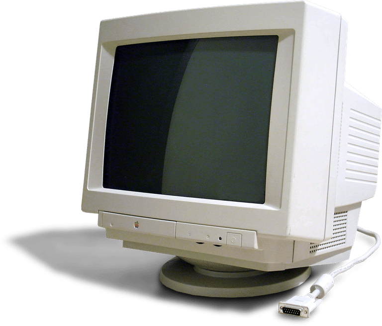
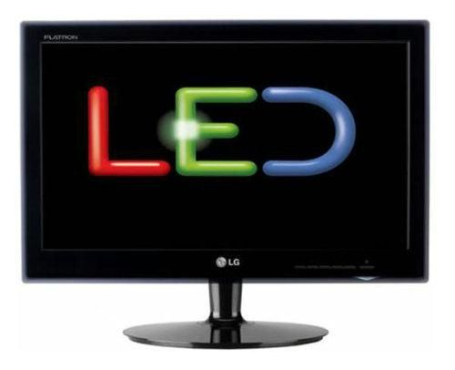
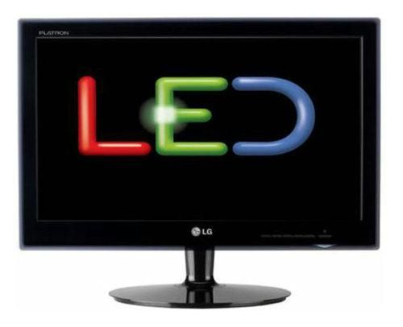

MONITOR
Monitor better known as VISUAL DISPLAY UNIT are most commonly used output devices. They produces output in form of display
which known as Softcopy. It is most convenient form of the output and it can be immediately used by the people. Though this output is in
the most convinent from but this output is not permanent as the hard copy produce by the printers.
Monitor is one of the primary component of visual display terminal. The monitor accepts the images converted from digital to analog form
and displays them on screen. The monitors looks like a TV screen as it also uses cathode ray tube inside but it is different from TV
screen in the sanse that a TV contain a tuner circuit too analog with CRT while the monitor does not contain a tuner circuit. Also the
resolution of monitor is much higher as compared to TV screen.
NOTE :- { For more detail about Different Types Monitor such as working principle history etc. click on it name or image....}
There are two types of monitors in use. They are :~
(a) CRT monitors { Cathode Ray Tube } 
(b) LCD monitors { Liquid Crystal Display }  CRT monitors use a cathode ray tube for displaying the images while the LCD monitors use liquid crystal displays. Normally all the
computers use the CRT monitors for very small computer like Laptops and note books etc.LCD monitors are small and easy to carry
monitors because they do not use bulky cathode ray tube. Also their power consumption is small as compared to CRT displays but
still CRT displays monitors are in use.
Another type of monitors famous these day LED { Light Emitting diode } 
Back
Homepage
CRT monitors use a cathode ray tube for displaying the images while the LCD monitors use liquid crystal displays. Normally all the
computers use the CRT monitors for very small computer like Laptops and note books etc.LCD monitors are small and easy to carry
monitors because they do not use bulky cathode ray tube. Also their power consumption is small as compared to CRT displays but
still CRT displays monitors are in use.
Another type of monitors famous these day LED { Light Emitting diode } 
Back
Homepage